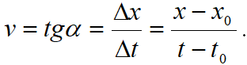

Mişcarea rectilinie şi uniformă este cel mai simplu tip de mişcare mecanică, în care punctul material străbate spaţii egale
în intervale de timp egale.
Mişcarea rectilinie şi uniformă are următoarele caracteristici principale:
-
Traiectoria mobilului este o linie dreaptă.
-
Vectorul viteză este constant în timpul mişcării:
Conform principiului I al dinamicii, un corp îşi menţine starea de mişcare rectilinie uniformă, dacă asupra lui nu acţionează
nici o forţă, sau dacă rezultanta forţelor aplicate este nulă:
Considerăm un mobil care efectuează o mişcare rectilinie uniformă şi ataşăm un sistem de referinţă cu axa mişcării Ox:
Cum viteza medie coincide cu viteza momentană, din expresia vitezei

obţinem
legea mişcării (ecuaţia spaţiului în mişcarea rectilinie şi uniformă) de forma:
x=x
0+v(t-t0)
Reprezentând grafic ecuaţia x=f(t),care este o dependenţă liniară, obţinem
o dreaptă de pantă egală cu valoarea vitezei:

Se disting situaţiile:
- panta dreptei este pozitivă când mobilul se îndepărtează de originea axei
- panta dreptei este negativă când mobilul se apropie de originea axei
► Interpretarea graficului:
- Intersecţia cu axa Ox reprezintă coordonata iniţială x
0 a mobilului la momentul t=0.
- Intersecţia cu axa Ot reprezintă momentul t
0 la care mobilul trece prin originea axei.
- Trasând graficul vitezei funcţie de timp în mişcarea rectilinie uniformă putem afla distanţa parcursă,
calculând aria de sub grafic (d = v ∙ Δt).